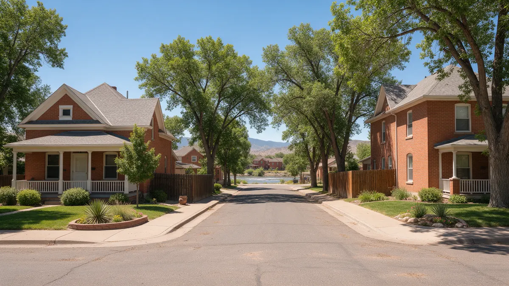

Pueblo CO Water Leak Repair: A Handbook for Homeowners

Pueblo CO water leak repair often involves older houses, from the Northside to Eilers to the blocks near Union Depot, and the plumbing inside them tells a long story. This handbook is built around what you can do and decide: the first ten minutes, how to spot trouble, and how to talk to a plumber. Plumbing Pros Colorado is a referral line connecting callers with independent local plumbers.
First actions when a pipe lets go
Find the main shutoff and turn it off. Older Pueblo homes sometimes have a valve that has not been touched in decades, so turn it gently. If it will not budge, do not force it and look for the curb valve or call for help.
With the water off, open a faucet at the lowest level, switch off the water heater if the leak is near it, and begin removing water. Take photos for your records.
Keep a wrench or valve key near the shutoff so no one hunts for tools in a panic. A tag on the valve saves minutes when someone else is home.
Reading the warning signs
- brown or orange water after sitting
- low pressure at several fixtures
- green stains near copper joints
- musty basement corners
- slow drains with gurgling
- wet patches in the yard
Brown water can come from corroding galvanized lines inside the house, so it is worth telling the plumber exactly when you notice it. Houses that have seen many decades of repairs often have mixed materials after decades of repairs.
If a basement has a floor drain, check that it is clear. A backed-up floor drain can look like a leak but needs a different fix.
What a plumber will tend to look at
Visible pipe condition, valves, the water heater and the meter come first. Hidden lines may be checked with pressure tests and acoustic gear. A camera can reveal whether the sewer line is cracked, offset or full of roots.
Pueblo's soils and the nearby Arkansas River and Fountain Creek confluence mean water can move in unexpected ways. A plumber can help you tell whether a wet spot is from a pipe or from drainage.
Plumbers often explain findings well when they can point at the actual pipe, so be available to walk the basement or crawlspace with them.
Deciding between patch and larger work
A pinhole at one joint is a different situation than a line with many weak spots. The plumber can explain whether a spot repair buys you years or whether bigger work makes more sense.
If you plan to remodel a bathroom or kitchen soon, mention it. Combining plumbing updates with other work may reduce disruption, and a plumber can advise on timing.
Ask which repairs are urgent and which can wait. A useful conversation should separate must-do items from options.
Longer term care for older pipes
Know where your shutoff and cleanout are. Test shutoff valves once a year by closing and reopening them. A valve that does not move is better found on a calm day than during a leak.
Protect exposed pipes against winter nights that dip below 32°F, and watch for pressure changes after summer heat. Small habits keep older systems from surprising you.
Summer heat can raise pressure in a closed system, so a thermal expansion tank is worth asking about if you have a water heater with a check valve.
The Pueblo factor
Pueblo's long history as an industrial and railroad city means neighborhoods grew in waves, and plumbing grew with them. The Northside, Eilers and the blocks near the Historic Arkansas Riverwalk can each have their own mix of materials and past repairs.
The climate adds its own pressure: hot summers, cold snaps and low humidity. Valves left alone for years can seize, and pipes in unheated spaces face winter nights. Regular small checks beat discovering a stuck valve on the worst day.
If you inherited an older house or bought one recently, a walk-through with the plumber can be useful on its own. Locate the shutoff, the cleanout and the water heater together, and ask which pieces look original so you know what to plan for over the next few years.
Frequently asked questions
How do I check if my shutoff valve works?
Close it slowly, confirm that water stops, then reopen it. If it is stiff or drips from the stem, a plumber can replace it before an emergency. Drain cleaner can sit in a trap and harm pipe and fixtures, which is why many plumbers prefer mechanical clearing.
Is it okay to use drain cleaner?
Chemical cleaners can damage older pipes and are hard on the people who work on drains afterward. A plumber can clear a clog with tools instead. Ask the water provider about testing if you have concerns. It is a separate step from plumbing repair.
Can lead be in older plumbing?
Older homes can have lead in service lines or solder. Your water utility can tell you about testing, and a plumber can identify pipe materials. Standing water after a backup carries health risks, so keep children and pets away until it is cleaned properly.
What should I do after a sewer backup?
Stop using water, avoid contact with the backed-up water, and call a plumber. Cleanup of contaminated areas needs care. Local conditions vary from the East Side to the Northside, so give your neighborhood when you call.
Do you serve Pueblo West?
Independent plumbers in the region take calls from Pueblo West and nearby areas. Share your location when you call. If water is only warm or lukewarm when it should be hot, mention it as it may be a water heater issue.
Plumbing services in Pueblo
- Water Leak Repair
- Emergency Plumbing
- Drain Cleaning
- Water Heater Services
- Sewer Line Repair
- Gas Line Services
- Slab Leak Repair
- Pipe Repair & Replacement
- Toilet Repair
- Bathroom Plumbing
Nearby Colorado cities
- Water leak repair in Castle Rock
- Water leak repair in Littleton
- Water leak repair in Morrison
- Water leak repair in Denver
Ready to talk to someone? Call (720) 794-0974 or visit talk to a plumber in southern Colorado.